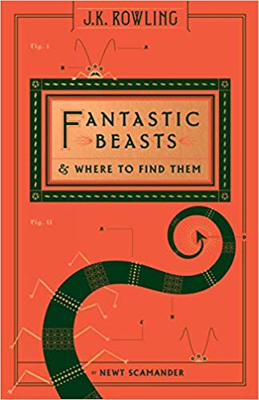

Newt Scamander's classic compendium of magical creatures, has delighted generations of wizarding readers. Now, in this updated edition with a new foreword by Newt himself and the unveiling of six beasts little known outside the American wizarding community, Muggles too have the chance to discover where the Thunderbird lives, what the Puffskein eats, and why shiny objects should always be kept away from the Niffler.
